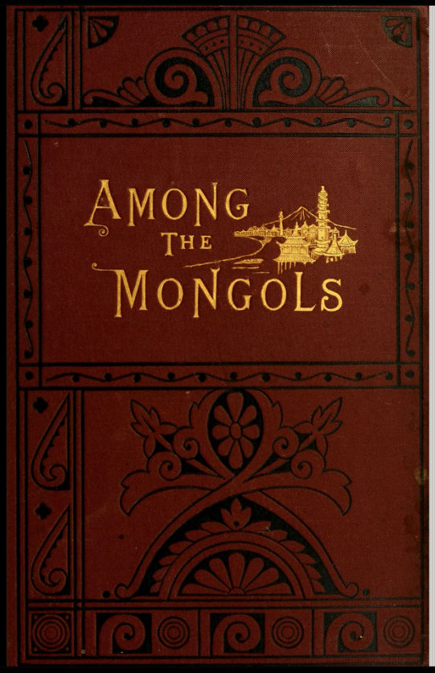

| 『モンゴル人の友となりて」 分冊12 | |
| 佐藤武久（編集） | |
| (2016) | |
編集者のまえがき
この電子書籍は「蒙古人の友となりて」（ジェームズ・ギルモア 著 (1883.05) 後藤冨男訳 (1939.09.06)）を分冊化し、第29章、第30章、第31章を分冊12として電子書籍化したものです。電子化にあたり「蒙古」を「モンゴル」に、「喇嘛」を「ラマ」に、「包（パオ）」を「ゲル」に置き換えるなど旧仮名使いや古い言い回しの一部を改訳しております。
第29章 モンゴルの説話
第30章 モンゴルの狼
第31章 北京とモンゴル人
なお、1883年5月ロンドンで公刊された英文の原書「Among the Mongols」の無料のeBookが次のサイトで入手でき、iBooksで閲覧できます。
https://archive.org/details/amongmongols00gilm
さらに、もう一つの著作も下記サイトで入手できます。
「JAMES GILMOUR OF MONGOLIA HIS DIARIES LETTERS AND REPORTS」
総目次
「モンゴル人の友となりて」
ジェームズ・ギルモア 著 (1883.05)
後藤冨男 訳 (1939.09.06)
佐藤武久 編集・電子化（2015.12.15)
（原書の表紙）

（ギルモアの肖像）

第29章 モンゴルの説話
出家ー善王と悪王ー魔法使いー画工と建具師
仏教に身を捧げて修行するものを励ましたい時には、モンゴル人はよく次のような物語をするが、これは言うまでもなく、数ある仏教伝説の中の一つを通俗的に焼き直したものである。
一人のラマが山に籠って、ひたすら瞑想と祈祷と研鑽とに身を捧げた。仏陀の悟りを開きたいとの願いから熱心に修行したが、三年経っても求道の験はなかった。今は疲労困憊し、赤貧洗うがごとくになったラマは、ついに山住いを捨て、俗人になろうと下山して来た。その道すがら、険しい崖に下に行きかかると、一人の男が、一本の頭髪をもって崖を挽き切ろうとしているのを見た。
「何をやろうとしているのですか？」
とラマが尋ねた。
「私はこの崖を切り開こうとしているのです」
と答える。
「何ですって？ーーーとラマは驚いて聞き返すーーーこの髪の毛でですか？ とてもそんなことができるものじゃない。」
男は答えて、
「できますとも。できないことがあるものですか。あくまで耐え忍べば、きっとこの髪の毛で、この崖を切り開くことができるでしょう。」
これを聞いたラマは大いに考えさせられ、思案しながらそこを離れた。
「あの男は不平も言わずに、ここに座り込んで、一筋の髪の毛で崖を切り開くなどという、まるで見込みのなさそうな仕事を続けている。私も落胆してはいけない。私は悟りを開きたいと三年間修行し、開き切れずに失望した。しかし、この男と比べれば、三年くらいは取るに足りない。失望したことがむしろ恥ずかしい。そうだ、もう一度帰ろう。そしてもう三年修行しよう。」
山に帰ったラマは、また三年間難行苦行を積み重ねたが、やはり悟りは得られなかった。再び気も挫けて、もう修行はやめて還俗しようと、山を下りて、ふと丘を通りかかると、一人の男が大釜を据え付けて、岩から折々滴る水を受けているのに出会った。
「何をしているのですか？」
ラマが問う。
「釜に水を満たしているのですよ。」
とその男、驚いたラマは、
「何ですって？ こんな大きな容れ物に、偶々落ちて来たり来なかったりする水滴をいっぱいにしようと言うのですか？」
「それは手間はかかりますよ。でもいつかはいっぱいになりましょう。」
これを聞いたラマは感心してまた考え込んだ。
「私は六年間仏陀のお姿を拝みたいと修行して、まだ拝めないので失望した。しかし、この男が、この釜いっぱいになるまで根気よく待つことができるなら、私も六年間の無駄骨を負ったからとて挫けてはならない。そうだ、帰ってもう三年修行を続けよう。」
ラマは山に帰った。また三年経った。それでも仏陀のお姿は拝めなかった。精も根も尽き果てた彼は、もう何をする気もなくなって、俗界に入ろうと山を下って来た。彼がちょうど麓まで来たところ、見るも哀れな一匹の雌犬が居て、毛は抜け落ち、赤膚は蛆に悩まされている。ラマは立ち上がって、どうしたものかと思案した。もしも蛆を犬から取れば蛆が死んでしまうであろうし、そのまま蛆のたかるに任せておけば、犬の方が死ぬであろう。この板挟みに陥った彼は、とうとう自分の太ももの肉を削って、半分を蛆に与え、半分を犬にやろうと思いついた。あわやこれを実行しようとした時、頭上に後光がさしたと思うと、幻影が現れた。ーーーこれこそマイダリ・ボルハ（弥勒仏）のお姿であった！ 犬はと見れば、その姿はない。それも幻であったのである。
マイダリはラマに、何者か、また何をする者かとお尋ねになった。ラマは、お姿を拝みたいと熱心に願って、九年間も修行を続けたが、望みは叶わず、心は常に闇であった、と愚痴を零した。思いがけなくもお姿の衣の様子が変わった。
「愚かな者よ、仏は常に汝の傍に居り、一寸たりとも離れはしなかった。見よ、汝の息吹が、仏の衣をいかに汚したかを！」
こうマイダリが宣った時、たちまちにしてこのラマは濶然として大悟徹底した。
二、善王と悪王
モンゴル人は、善根を勧め、悪業を戒める時に、よく次の話をする。
ある所に一人の良い王様がいて、貧しい者や遍歴の僧に慈悲深かったのみならず、王は何人にも物惜しみせず与えたので、ついには無一物に近くなった。王にはただ一人の息子があったが、死期が近づくや、臨終の床に呼び寄せ、汝の父を手本にし、そのやった通りにせよ、と言い遺した。王は持てる限りものは、持たざる者に与えるよう心がけていたのだ。
父親が死んで息子が王国を継いだ。その受け継いだ遺産とも言うべきものは、貧乏だけであった。その上に父王の教訓を守ったので、赤貧ますます洗うがごとき有様となった。彼の父親の言いつけは明らかであった。
「もし一尺の布でも持っていて、持たないものに逢ったら、その半分を与えよ。もし二碗の稷を持っていて、持っていない者に逢ったら、その一碗を与えよ」
この教訓を守ったので、若き王は、ついに十文を残すのみとなった。物乞いの僧が訪れたので、その中から五文を与えた。今は五文を残すのみとなった王は、その僧と運命を共にしたいと申し出た。ラマは快諾して、二人はそろって旅立った。
ここにまた一人の邪な王がいて、人民を虐げ、偸盗を行い、多くの富を築き上げた。彼には三人の息子があったが、王は自分の臨終も迫った時、死の枕辺にこれを呼び、相変らず人民を苦しめ、強奪を続けるよう遺言した。王はその政策によって富を得たのだから、息子たちも父の真似をすれば、財を増やすことができると、いずれも父の言葉に従い、その真似をした。こうして財産はますます増えて行くばかりであった。
貧困のどん底に陥った善王の息子は、師の僧と艱難を共にしながら、悪王の三人の息子の居る宮殿にやって来たが、たちまち好奇心と軽蔑の的となった。
「王子ともあろうものが、乞食にまで成り下がろうとは！ あんなことのないようにと、戒めてくれた我々のお父さんはやはり偉かったのだ。」
彼らは互いにこう囁き合って、己の父親を讃え、自分らは幸せであると思った。その内に、末の弟が思い付いて、
「面白半分にあの坊主に私が加わって行ったらどんなものだろう？ そしてあの一文無しの王の困る様を見てやりたいものだ。兄さん方は賛成しますか、それとも不賛成ですか。」
と二人の兄に図った。
「それは素敵だ！」
と彼らは即座に言った。
「ぜひやってごらん。そして帰って来てすっかり話を聞かせておくれ。奴の弱る様子を聞くのはきっと面白いぞ。」
そこで末の弟はラマの仲間に加わり、一行三人、ラマと二人の弟子は発足して旅についた。
餓え乾き、苦しい旅に疲れ果てるかと思えば、一碗の食べ物や飲み物にありついたときの気持ち、旅ならでは味わえない人の世の情け、さらにまた憩いの甘さ、ーーー彼らは尽きぬ旅の苦楽を共にした。やがてある大きな山の麓まで来た時、ちょうどそこに、煤ぼけてぼろぼろな、みすぼらしいテントが一つあった。このテントには、年老いた夫婦だけが住んでいる。旅人たちはここに宿って休息した。老夫婦には子供がないので、ラマにお弟子の中どちらかをくれないかと懇願した。ラマは善王の息子に残れと命令したが、この若者は従わない。彼は弟子として師の坊に身を捧げたのだから、何があっても師と別れることは嫌だと答えた。ところが悪王の息子は、彷徨に飽き始めていたので、ここに残ることを承知した。で、彼を置いて師のラマは弟子一人と山を登り始めた。二人がかなり来た時、
「ああ、わしは数珠をあのテントに忘れて来た。行って取って来ておくれ。西側の方に置いたよ。けれどテントに入らないで、遠方から呼んで取ってもらいなさい」
と師のラマが言った。
しばらくして弟子は師の坊の許に帰って来たが、どうしたことか真っ青になって震えている。
「どうしたのか？」
と師の坊は問うた。
「おお、お師匠様、そこに行きましたら、老人夫婦は見るも恐ろしい獣に変っていて。悪王の息子の生き血を吸っているところでした。
「そうかーーーとラマは言ったーーーあれはお前の苦しむのを見ようとして一緒にやって来たののに、かえって自分の苦しむ様をお前に見られるようになった。」
山の頂上に行き着いた時、さて改めてラマが言うのに、
「もうわしはお前に別れて行かねばならない。」
これを聞いた弟子は非常に嘆いて、せめてもう少し何か覚えるまで別れを待ってくれと請い願った。師はこれをxxって、さらにまた幾日か彼を教え導くことになったが、何よりもまず空翔ける術を教えた。
彼が飛行に上達して来ると、師は彼に命じた。
「東の方に飛んで行って、どんな所か見ておいで。」
弟子は飛んで行った。そこで見たのは、見を切るように寒い荒野で、人々は凍りかけていた。しかし全部凍り切らない内に、また一度元へ戻り、それから改めて再び凍らされる。この方法が同じ人間に休みもなく繰り返されていた。よく見ると、中には死んだ悪王がいて、この苦しみを舐めさせられていた。
「今度は反対の方に飛んで行って、どういう所か見ておいで。」
とまた師が命じた。弟子は飛んで行ったが、今度見出したのは、緑の草や花や果物でいっぱいの、喜びに溢れた場所で、彼の両親が黄色い椅子籠に乗ってしずしずと運ばれ、その後から多数のラマが恭しく従って行くありさまが見えた。彼は父を呼んだが、父は見向きもしない。話しかけても返事もしなかった。彼には両親がよく分かったが、父母の方では彼を知らぬげであった。それで、彼は両親をあかず眺め続けて、満足して師のもとに帰って来た。
「そうだろうーーーラマは言うーーーお前は、両親が生前の功徳善根によって、よき報いの生活をしているのを見たであろう。善行の報いを得て、仏陀と同じ所に達することができた。そしてお前が見たとおり彼らは幸せを味わっている。」
「でもお師匠様、どうして両親は私を見てもくれず、話しかけてもくれなかったのでしょうか？」
と若者は尋ねた。
「それはお前がまだこの世の体を変えていないからだ。
そう言い終わるや、ラマは立ち去った。彼は単なる遍路の僧ではなく、釈迦牟尼仏の化身であったのだ。
三、魔法使い
魔法使いの力を疑わものを説き伏せようとする時には、モンゴル人は次のような話をする。
ある名高い魔法使いの法力が問題となって議論された時、一人の向こう見ずな若い男が、魔法使いは威力を持っていて、他の者なら騙すことができるかもしれないが自分だけは騙されないと 言い放った。この 高言を聞いた魔法使いは、立派な鞍を黒毛の駿馬に置いて、その若者の住家に乗って来た。話はすぐに、よく言われる魔法使いの力ということに落ちて、若者は一度それを試してみたいと言った。魔法使いは、結構だが、少し心配があるので、それを解決しておきたいと語った。それは、今支那人が彼の家に来ていて、前に借りた十両の借金を返せなければ、梃でも動きそうもなく、と言って今金の算段もつかず、結局支那人は黒毛の駿馬を抵当に曳いて行こうとしているが、三十両もする馬を十両の抵当にやりたくないので、二十両でこの若者に買ってもらえたいと思って来たという。ちょうどその話の時、若者の細君は、魔法使いと夫と自分にお茶を入れかけていたが、その間に馬を一目見て来ようと夫は外へ出かけて行った。外へ来て馬を一目見た瞬間に、若者は正気を失ってしまった。それからどこをどう歩いたかわからぬが、やがて彼は無人島を彷徨っていた。あちこちと歩き回った挙げ句、海辺に近い山の麓にたどり着いた。するとそこには一軒の小屋が立っていて、行って見ると一人の婦人が住まわっている。婦人は何者とも明かさなかったが、彼も自分のことは何も言えなかった。ともかく彼は一両日その家に滞在することとした。
やがて暇を告げる時が来たが、なんとなく去りがたい心持ちであったし、また行く先もないので、とうとう彼は婦人に結婚を申し込んだ。二人は夫婦になった。そして、お互いの生活が少しはましなものになった。妻は山へ行って薪を採り、水を汲み、家事に精を出し、夫は狩りをして暮らしを支える。そうするうちに子供が生まれたので、両親の喜びは一方ではなかった。彼らは言った。
「ああ、とうとう私たちは三人になった。もう恐れることはない。」
それから二年過ぎた。また一人生まれた。
「ああ、われわれは四人になった。もう安心して暮らして行ける。」
と彼らは話し合った。こうして六年も経ったある日のこと、父は仕止めた鹿を負うて帰って来ると、一方母親も薪の束を持って家に差しかかるところであった。ちょうどその時、下の子が海の方に這って行って、あなやと見る間に真っ逆さまに海に落ちた。弟を助けようとした上の子もまた後から落ちて溺れた。狂気のようになって駆けつけた母は、二人の子供を救おうとして力及ばず、彼女も落ち込んでしまった。背中の鹿を放り出した父親は息を切らして現場に急いだが、何もかもついに遅かった。もはや手の施しようもない。今や彼は再び孤独となった。それから一、二ヶ月は実に惨めな生活を送った。鹿肉を得ようとすれば薪に困るし、薪を採りに行けば食うものがなくなる。やがて彼はまた意識を失って自分がどこにいるのかが分からなくなってしまった。しかし、だんだん自分のゲルに似たものが見え出し、その前には馬も繋いであったので、おやと思う間に正気づいて来た。よく見れば、妻が声を荒げて、お茶が冷めてしまいますよ、飲まないのですかと、揺すっていた。
やがて事の真相が彼に分かった。魔法にかかっていたのである。そして注いだ一碗の茶が冷え切らない内に、六年に余る生活の喜びと悲しみを嘗め尽くしたのであった。
四、画工と建具師
隣人に仕掛ける悪巧みを防ごうとする時には、モンゴル人は次のような話をして、人を呪わば穴二つの教えを示そうとする。
ある王様が位に就いた時のこと、人民の中に日頃仲の悪い建具師と画工がおり、一日画工が若い新王の御前に出て申し上げた。
「父君は転生遊ばしまして、私にご使者を賜りました。参上いたしますと、先王様はそれはそれはお幸せにお暮らしでいらっしゃいまして、私にこのお手紙をお言付け遊ばしたのでございます。」
手紙というのは、息子である若い王に宛てたもので、次のような文面であった。
「私は今天国にいるのでまことに幸福である。ところが私は寺を建立しようと思っているのだが、ついては息子よ、お前は町から建具師の「広悦」を私の許に寄こしてもらいたい。お前の治める王国が栄えて行くのを私はうれしく思う。お前の善政を布こうとする努力を、私はここから助けてあげよう。」
若い王はこの手紙を読んで大いに喜び、早速建具師を呼び寄せて、さて言われた。
「父上は天国にお生まれ変わりなさったので、寺を建立したいとの思し召しから、お前にお迎えを遣わしになったのだ。
王はこう言いながら例の手紙を彼に手渡された。建具師は手紙を読んで内心思った。
「そんな馬鹿な話のあるはずがない。画工の奴はいつも悪巧みをするのだから。」
こう考えながら王にお尋ねした。
「では一体どんなふうにして天国に参ったらよろしゅうございましょう？」
王は再び画工に下問せられた。すると画工の答えるには、
「建具師を道具といっしょに真ん中に据えて、その周囲に薪を積み重ね、油を注ぐのでございます。それから太鼓・シンバル・笛・胡弓などの音に合わせて、 薪に 火をつけます。すると建具師は煙の馬に乗って昇天することができます。さよう父王様が仰せられました。」
建具師が返事申し上げた。
「参りますに就きましては私にも多少の用意がございます。七日の内に旅支度を整えますでございましょう。」
それから彼は家に戻って、自分の妻に画工の悪巧みを一部始終物語った。そして、その奸計を逃れるため、自分の家から焼かれる場所まで地下道を掘り抜き、最後の所は石で蓋をし、その上をまた砂で覆った。
ちょうど七日目に、王様は建具師を父王の所に送ろうとして、人民から一籠の薪と、一瓶の油を徴収した。これをことごとく積み上げ、建具師を建具とともに真ん中に据え、やがて火を放った。太鼓が響く、シンバルが鳴る、笛が響いて、やがて煙がもうもうと立ちこめるや、建具師は地下道に抜け出し、道具を背負って、まんまと家に帰って来た。画工は、天にも届く煙を見やりながら、
「あそこに建具師が昇天して行く。」
と絶叫した。見物人たちは随喜の涙をこぼし、
「建具師は昇天した」
と語りながら散って行った。
建具師は一月の間家に潜み、その間に毎日牛乳の風呂を使って、自分の体を白くした。ちょうど一ヵ月位経ってから、彼は絹の衣を着けて王の御前に伺候し、前王の手紙を奉呈した。手紙にはこんな文句が書いてある。
「お前が王国を忠実に治めていることをうれしく思う。家具師の「広悦」はここに寺を建ててくれたから、その骨折りをよくねぎらってくれるよう。寺は今度は外飾をせねばならぬから、画工の「久悦」を、建具師の時と同じ方法で遣わしてくれ。」
「お前が天国へ参って、父上はお喜び遊ばしたか？」
王がそう問われたので建具師は実際天国へ行って来たかのように、いろいろお話をした。若き王はご機嫌斜めならず、建具師にご褒美をたくさん賜った上、あらためて画工を迎えさせられた。
画工は建具師が色白になり、絹の衣を纏っているのを見て、死なぬのに驚いたばかりか、本当に天国に行って来たのだと思い込んでしまった。自分の計画通り本当に彼の敵が煙の馬に乗って昇天したと思ったので、画工は七日したら自分も参りましょうと快諾した。その日、その時刻が来た。画工は塗料と筆を持って、油のかかった薪の中央に据えられ、火がつけられた。煙が上がった。煙はたちまち彼を包んでしまった。熱さ苦しさにのたうち回り、声を限りに喚いたが、太鼓・シンバル・笛・胡弓の音に打ち消されて、ついに画工は真っ黒に焼け焦げてしまった。
（EOF）
第30章 モンゴルの狼
旅行者の中には、モンゴルに一足踏み込めば狼に出会うと思っている人もある。狼はいるにはいるが、張家口からキャフタまで突破しても、一匹すら廻り逢わぬこともある。時には狼の声は聞こえても、姿の見えぬこともある。ある冬のこと、一名の外国人が、モンゴル人従者をただ一人連れて旅行していた。幌付きの車は壊れてしまって、普通の幌なしに変えねばならなくなった。ある時、ちょうど一行が休止していると、何か物音が聞こえて来た。車の駱駝が耳をそば立てたと思うと、その外国人だけ車に乗せたまま、モンゴル人やほかの駱駝を置き去りにして一目散に走り出した。この驚愕の原因は狼の咆哮であって、度を失った駱駝が向こう見ずに走り出したのである。外国人は機会を窺い、車がとある氷上に差しかかるや、敷物を掴んで車から飛び降りた。このため足下に狂いを生じた駱駝は、多少歩を緩めながら行ってしまった。外人は一方の危険は免れたが、一難去ってまた一難の苦境に気がついた。狼が襲ってきたらどうしよう？ こんな真闇の森の中で助けもなくただ一人、どうしたら良いのか。その内に、何者か近づいて来る気配がする。旅行者は早くも救われがたい気持ちになって、今にも狼が飛び出して来ることと暗い木立の間を凝視した。ところが幸いにも、モンゴル人が駱駝に乗って後を追って来たのであった。逃げ出した駱駝と車はあるテントの傍にいるところを捉まえた。